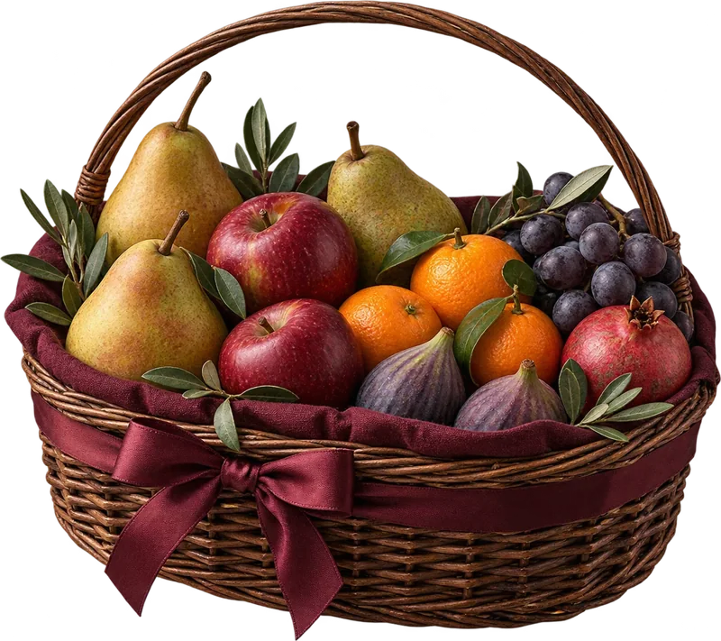
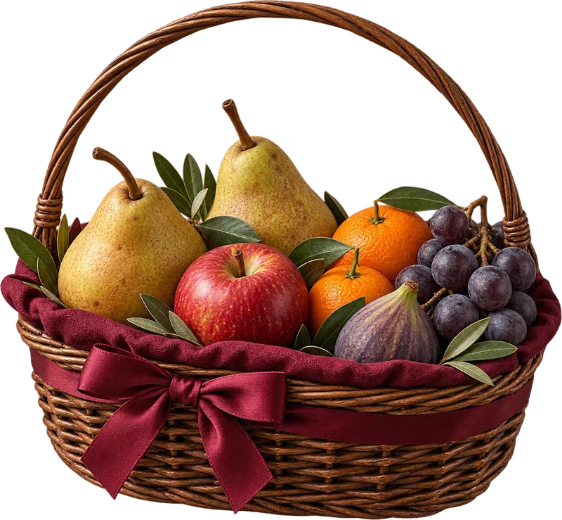
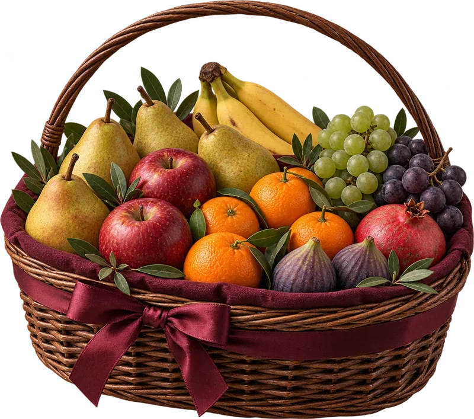

Собрано, чтобы порадовать.
Фруктовые корзины ручной сборки. Выберите размер, чтобы рассмотреть композицию.
Выбрать корзинуФруктовые корзины

Малая корзина
Компактная композиция в плетёной корзине с ручкой.
Средняя корзина
Фрукты разных цветов, подобранные по форме и размеру.

Большая корзина
Праздничная композиция с крупными плодами и виноградом.